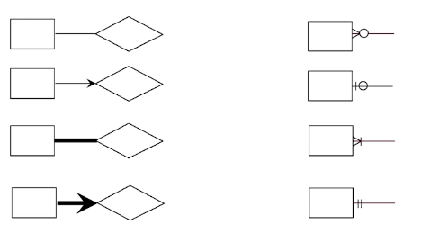

 
A set of attribute that describes the real world (e.g., employees)
with attributes (e.g., employee_id)
- Entity set: A collection of similar entities
- Each entity set has a key
- Each attribute has a domain (type)
- Relationship: An idea of a relationship
- Think of the relationship when creating views.
Constraints
- Key constraint:
- One to Many: A key constraint on an entity such
that each row of the entity can point to many rows of the other
entity.
- Many to Many: If there are no key constraint on an
entity such that any row of the entity can point to any row of the other
entity.
- One to one: If there are key constraint on both
entity then each row of each entity can only point to one.
- One to many and one to one implies at most one
- Participation constraint:
- A participation constraint on an entity such that every row must be
part of the relationship to another entity.
- This implies at least one.
Weak Entities
An entity owned by a primary key of the another (owner) entity that
isn’t a full entity.
- Must have total participation.
- A weak entity has a partial key which can be a full key once it
relates to its owner entity’s primary key.
Entity to Schema
- Key Constraints
- One to One:
FK(pk_1), FK(pk_2)
- Participation Constraint
- Full participation =
NOT NULL
- Weak entity
- Composite key on id and the foreign key
PK(pk, fk), FK(fk)